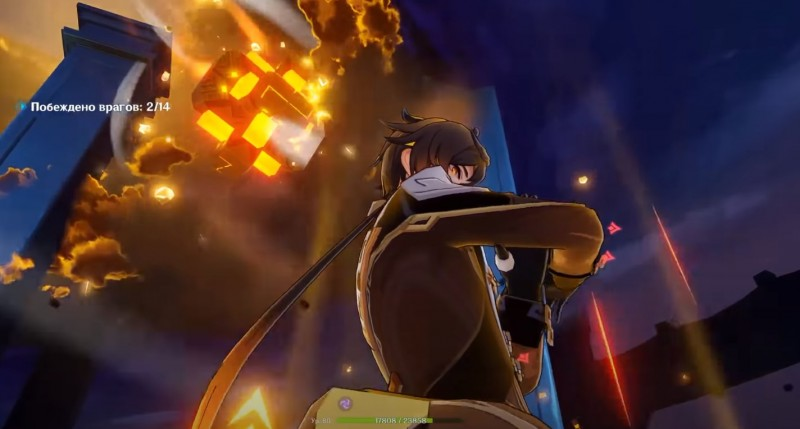
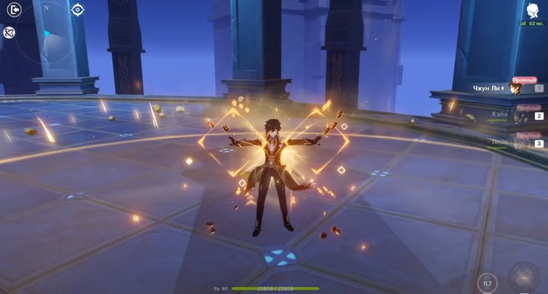
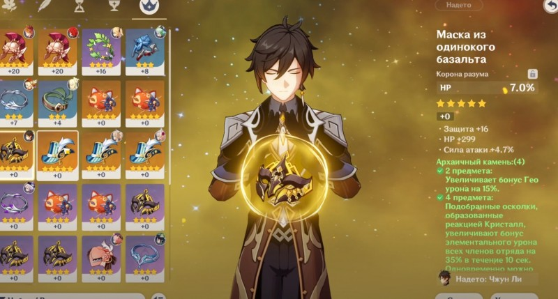

Гайд на Чжун Ли

В Genshin Impact Чжун Ли является 5-звездочным персонажем, относящимся к Гео классу и орудующим копьем. В команде он может выполнять роль основного DPS или поддержки. В этом гайде мы расскажем про его лучшие билды, оружие и артефакты. Вы также узнаете о его способностях и сильных сторонах.
Как играть за Чжун Ли
Сразу отметим, что данный персонаж отлично показывает себя в сражениях как с обычными мобами, так и с боссами, а также при необходимости может поддержать своих союзников. Все это вытекает из его основных преимуществ:
Высокая скорость атаки.
Нанесение большого Гео урона по площади.
Может превратить врагов в камень своим элементальным взрывом.
Способен вытягивать Гео элемент из противников.
Превращайте врагов в камень с помощью «Падения кометы»
Во время применения стихийного взрыва этого героя на поле боя падает огромный метеорит, накладывающий на всех мобов в зоне своего воздействия окаменение. Это отличное умение для контролирования толпы, похожее на элементальную реакцию Заморозка, то есть враги теряют возможность двигаться. В этот момент вы можете быстренько исцелиться, нанести противникам дополнительный урон или просто убежать.
Балансируйте между атакой и защитой с Dominus Lapidis Быстрое нажатие клавиши, отвечающей за элементальное умение, вызывает каменную колонну, наносящую Гео повреждения по площади при появлении. Затем периодически она атакует всех окружающих ее врагов.
Эта колонна представляет собой Гео конструкцию, то есть вы сможете подняться на нее или использовать, чтобы блокировать атаки врагов. В результате вам удастся одновременно защищаться от противников и наносить им урон. Кстати, заряженный удар у Чжун Ли вызывает ливень из каменных копий. На его использование тратится выносливость.
Снимайте Гео защиту врагов
Если долго удерживать клавишу умения «Dominus Lapidis», то персонаж наносит Гео урон по площади, формирует Яшмовый щит, мощность которого зависит от максимального здоровья, и истощает Гео элемент у ближайших противников.
В последнем случае вражеские Гео конструкции и щиты либо разрушаются, либо получают значительный урон. Этот навык отлично подходит для сражения с Хиличурлами-стражниками, Митачурлами или Шамачурлами.
Пассивные навыки и таланты
Выше мы в основном рассмотрели активные способности и умения этого копьеносца. Его пассивки выглядят следующим образом:
Каменная воля – повреждения, поглощаемые при активированном щите, позволяют герою получить статус Укрепление, который повышает его прочность на 5 процентов. Эффект складывается до 5 раз.
Богатый стол – при использовании «Падения кометы» наносятся дополнительные повреждения, равные 33 процентам от максимального здоровья персонажа.
Кристальная судьба – во время ковки древкового оружия герой возвращает 15 процентов потраченной руды.
Что касается талантов, то полезными являются даже низкоуровневые, однако последнее созвездие позволяет Чжун Ли по максимуму раскрыться в качестве персонажа поддержки. Список всех перков:
На чем держится земля – одновременно можно использовать две Гео колонны.
Колыбель нефрита – при использовании «Падения кометы» все союзники получают Яшмовый щит.
Яшмовый блеск – повышает уровень «Dominus Lapidis» на три. Максимальный уровень 15-й.
Топаз, несломленный и бесстрашный – повышает область поражения «кометы» на 20 процентов, а окаменение длится на 2 секунды дольше.
Лазурит, вестник порядка – повышает уровень «Падения кометы» на три. Максимальный уровень 15-й.
Кризос, награда деспота – 40 процентов получаемых повреждений превращаются в здоровье для активного героя при включенном яшмамовом щите. Размер восстановления не превышает 8 процентов от максимального здоровья персонажа.
Лучшие билды для Чжун Ли
Основной DPS на физ.урон.Этот билд направлен на увеличение скорости атаки героя и максимизации его урона, наносимого с помощью обычных и заряженных ударов. В этом случае советуем дать ему следующее оружие:
Пик полумесяца (4-звездочный, лучший вариант) – при сборе элементарных частиц и сфер повреждения от заряженных и обычных ударов повышаются на 20 процентов на 5 секунд. Можно скрафтить. Лучший вариант для Чжун Ли в роли дамагера.
Посох Хомы (5-звездочный) – повышает уровень здоровья на 20 процентов и увеличивает бонус атаки на 0,8 процента от максимального HP. Если шкала жизни падает ниже половины, то атака дополнительно возрастает на 1 процент. Еще одно прекрасное копье для данного героя.
Смертельный бой (4-звездочный) – когда рядом находятся от двух и более противников, показатель защиты и атаки героя повышается на 16 процентов. Если сражение идет только с одним врагом, то сила атаки возрастает на 24 процента.
Покоритель вихря (5-звездочный, альтернатива) – повышает силу щита на 20 процентов. При попадании по врагам увеличивает атаку на 4 процента на 8 секунд. Эффект складывается до 5 раз. Срабатывает раз в 0,3 секунды. При активном щите атака повышается на 100 процентов.
Нефритовый коршун (5-звездочный, альтернатива) – при попадании повышает атаку на 3,2 процента на 6 секунд. Эффект складывается до 7 раз и срабатывает раз в 0,3 секунды. При максимальном числе зарядов урон увеличивается на 12 процентов.
Что касается набора артефактов, то основному дамагеру будут важны следующие параметры: физический урон / сила атаки / шанс критического удара. Если же говорить об сетах то возьмите:
Рыцарь крови – 2 предмета: повышает физический урон на 25 процентов. Можно добыть в подземелье «Чистая вода и горная пещера».
Конец гладиатора – 2 предмета: повышают силу атаки на 18 процентов. Выпадает из элитных боссов. Эти наборы идеально работают с Пикой полумесяца.
Персонаж поддержки
Данный билд направлен на усиление стихийного взрыва и элементального умения персонажа, чтобы он наносил максимально возможный Гео урон и безотказно накладывал на врагов статус Окаменение. В качестве оружия можете использовать:
Копьё Фавония (4-звездочный) – при нанесении критических ударов с 60-процентной вероятностью создает элементальные частицы, восстанавливающие 6 единиц энергии. Эффект проявляется раз в 12 секунд. Идеальный вариант для Чжун Ли, часто использующего свою ульту.
Небесная ось (5-звездочный) – повышает вероятность нанесения критического удара на 8 процентов и увеличивает скорость обычной атаки на 12 процентов. Кроме того, обычные и заряженные удары имеют 50-процентный шанс вызвать срабатывание вакуумного клинка, который наносит урон по площади в размере 40 процентов от силы атаки. Этот эффект может срабатывать не чаще одного раза в 2 секунды.
Черногорская пика (4-звездочный) – после победы над врагами сила атаки возрастает на 12 процентов на 30 секунд. Эффект суммируется до трех раз.
Для саппорта на стихийные повреждения следует взять артефакты со следующими параметрами: Гео урон / шанс крита и критический урон (с соотношением 1 к 2) / очки здоровья или сила атаки. Если же говорить о наборе артефактов, то советуем взять следующие сеты:
Архаичный камень (2 предмета) – повышает бонус Гео повреждений на 15 процентов. Его можно выбить при прохождении подземелья «Владения Гу Юнь».
Церемония древней знати (2 предмета) – повышает повреждения от стихийного взрыва на 20 процентов. Его можно выбить при прохождении подземелья «Чистая вода и горная пещера».
Чёрная кисть (3-звездочный) – повышает урон по слаймам на 40 процентов. Берется по той причине, что дает бонус к шкале здоровья Чжун Ли.
Архаичный камень (2 предмета) – повышает бонус Гео повреждений на 15 процентов. Его можно выбить при прохождении подземелья «Владения Гу Юнь».
Церемония древней знати (2 предмета) – повышает повреждения от стихийного взрыва на 20 процентов. Его можно выбить при прохождении подземелья «Чистая вода и горная пещера».
Основной DPS: Чжун Ли
Второстепенный DPS: Гань Юй
Поддержка: Фишль – для создания Суперпроводника
Поддержка: Бэй Доу – для создания резонанса
Основной DPS: Чжун Ли
Поддержка: Альбедо – для создания резонанса и быстрого восстановления энергии
Второстепенный DPS: Фишль
Второстепенный DPS: Син Цю - для создания реакции Заряжен
Вы также можете собрать полные варианты вышеуказанных сетов в зависимости от ваших целей. Архаичный камень лучше усиливает команду, а Церемония древней знати предполагает более частое использование ульты Чжун Ли.
Саппорт на щиты
Довольно нестандартный билд, который направлен на максимальное увеличение щитов Чжун ли. В качестве оружия в этом случае следует взять:
Все артефакты нужно взять с бонусами к шкале здоровья. Что касается самих наборов, то они идентичны предыдущему билду:
Сочетание с другими персонажами
Основной дамагер
Можно собрать несколько отличных отрядов, в которых Чжун Ли будет наносить огромный физический урон врагам. Первый вариант:
Второй вариант: